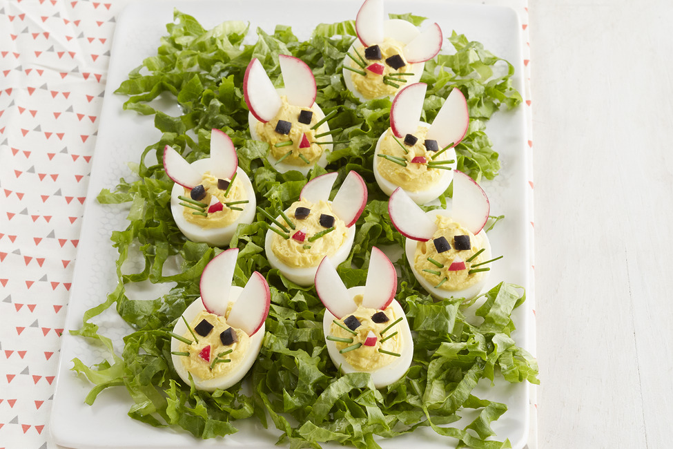

Easter Deviled Eggs

A very easy, special touch for Easter and fun to do at baby showers as well
Ingredients:
- 12 large eggs
- ¼ cup creamy salad dressing (such as Miracle Whip®)
- salt and ground black pepper to taste
- hot sauce
- ¼ teaspoon dry mustard
- 4 drops red food coloring, or desired amount
- 4 drops blue food coloring, or desired amount
- 4 drops green food coloring, or desired amount
- 3 cups water, or as desired
Steps:
- Place eggs into a large saucepan, cover with cold water, and bring to a boil. Let eggs boil for 3 minutes; turn off heat, cover pot, and let eggs cook in hot water for at least 20 minutes. Drain and cover eggs with cold water. Peel cooled eggs.
- Cut hard-cooked eggs in half lengthwise and remove yolks; mash yolks in a bowl with creamy salad dressing, salt, black pepper, hot sauce, and dry mustard until smooth.
- Place red, blue, and green food coloring into 3 different bowls and add about 1 cup water to each bowl. Steep 8 egg white halves in each bowl, tinting the egg whites pink, light blue, and green. If color is too pale, add more coloring to bowls. Drain colored egg whites on paper towels.
- Pipe or spoon egg yolk filling into colored egg white halves; cover and chill before serving, at least 30 minutes.